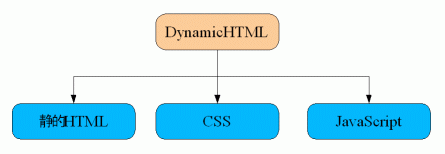
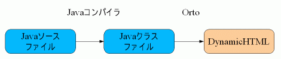

Orto は Web アプリケーションを作成するための言語です。 Servlet, PHP を補完します。 より理解を深めるために、その動作の仕組みを説明します。
ブラウザは１９９８年ごろから、従来の静的HTMLだけでなく、DynamicHTMLも表示できるようになりました。 DynamicHTMLは３つの要素から成立しています。

静的HTMLが文章の論理構造を扱い、スタイルシート(CSS)が色などの表示面を扱い、JavaScriptが動的な側面を扱うように分かれています。Orto はこの DynamicHTML を使っています。

Java コンパイラが Java ソースファイルを Java クラスファイルに変換し、 Orto がさらに、それを Dynamic HTML に変換します。 Dynamic HTML なので、プラグインは必要ありません。 Web アプリケーションの利用者はすぐに表示することが出来ます。